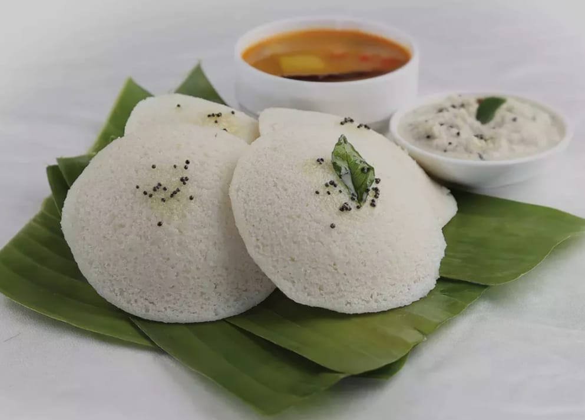

IDLI-SAMBHAR
The ingridents used to make Idli Sambhar.
The Instructuion To Follow To Make Recipe .
- Idli
- Soak: Soak 1 cup urad dal and 2 cups idli rice (with 1 tsp fenugreek seeds if desired) for 6-8 hours.
- Grind: Blend soaked ingredients with a little water until smooth.
- Ferment: Mix, add salt, and let it ferment for 8-12 hours.
- Steam: Grease idli molds, fill with batter, and steam for 10-12 minutes.
- Sambhar
- Cook Dal: Cook 1 cup toor dal in a pressure cooker with 3 cups water until soft.
- Prepare Veggies: Chop mixed vegetables (carrots, potatoes, etc.).
- Cook Veggies: Boil veggies with water and 1-2 tbsp tamarind paste until tender.
- Combine: Add cooked dal and 1-2 tbsp sambhar powder; simmer for 10 minutes.
- Tempering: Heat oil, add mustard seeds, cumin seeds, and dried red chilies. Pour over sambhar.
- Serve
- Enjoy idlis with sambhar and coconut chutney!
If You want to see the video please click the below link. HERE
BACK